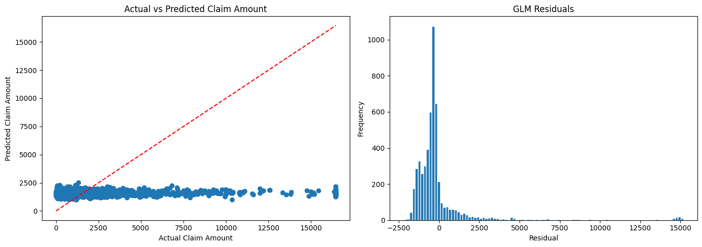
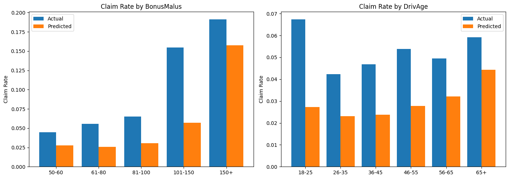

import numpy as np
import pandas as pd
import matplotlib.pyplot as plt
from sklearn.model_selection import train_test_split
from sklearn.metrics import mean_absolute_error, mean_squared_error
import statsmodels.api as sm
import warnings
warnings.filterwarnings('ignore')—title: “GLM: Gamma and Poisson Baselines”description: “Gamma GLM for severity and Poisson GLM for frequency — the actuarial industry standard and interpretable baseline.”date: “2026-03-28”—
Notebook 2: GLM Models
This notebook fits two GLMs. - Part 1 — Severity: Gamma GLM with log-link, predicting claim amount given a claim occurred - Part 2 — Frequency: Poisson GLM with log-link, predicting claim rate across all policies
The outputs of both models are combined in notebook 5 to estimate a pure premium.
Part 1: Severity — Gamma GLM
Predicts how much a claim costs, given one occurred. Uses 26k claims dataset.
df = pd.read_csv('../data/claims_cleaned.csv')
print(df.shape)
df.head()(26439, 13)| IDpol | ClaimNb | Exposure | Area | VehPower | VehAge | DrivAge | BonusMalus | VehBrand | VehGas | Density | Region | ClaimAmount | |
|---|---|---|---|---|---|---|---|---|---|---|---|---|---|
| 0 | 139.0 | 1 | 0.75 | F | 7 | 1 | 61 | 50 | B12 | 'Regular' | 27000 | R11 | 303.00 |
| 1 | 190.0 | 1 | 0.14 | B | 12 | 5 | 50 | 60 | B12 | 'Diesel' | 56 | R25 | 1981.84 |
| 2 | 414.0 | 1 | 0.14 | E | 4 | 0 | 36 | 85 | B12 | 'Regular' | 4792 | R11 | 1456.55 |
| 3 | 424.0 | 2 | 0.62 | F | 10 | 0 | 51 | 100 | B12 | 'Regular' | 27000 | R11 | 989.64 |
| 4 | 424.0 | 2 | 0.62 | F | 10 | 0 | 51 | 100 | B12 | 'Regular' | 27000 | R11 | 9844.36 |
# Features to use — drop IDpol (ID), Exposure and ClaimNb (not relevant for severity)
features = ['VehPower', 'VehAge', 'DrivAge', 'BonusMalus', 'Density', 'Area', 'VehBrand', 'VehGas', 'Region']
target = 'ClaimAmount'
# Changing the categorical columns: Area, VehBrand, VehGas, Region into numeric columns
# Hint: use pd.get_dummies with drop_first=True
# df[features + [target]] -> subsetting to only the features and the target variable.
df_model = pd.get_dummies(df[features + [target]], columns=['Area', 'VehBrand', 'VehGas', 'Region'], drop_first=True)
df_model = df_model.astype(float)
print(f'Features after encoding: {df_model.shape[1] - 1}')Features after encoding: 42X = df_model.drop(columns=[target])
y = df_model[target]
# Split into train/test sets (80/20, random_state=42)
X_train, X_test, y_train, y_test = train_test_split(X, y, test_size=0.2, random_state=27)
print(f'Train: {X_train.shape}, Test: {X_test.shape}')Train: (21151, 42), Test: (5288, 42)2. Fit Gamma GLM
Using statsmodels which gives full statistical output (p-values, confidence intervals).
Gamma — the distribution we assume for ClaimAmount. We use it because. - Claims are always positive (can’t have a negative claim) - The distribution is right-skewed, which Gamma handles naturally
- Errors are proportional — a €500 error on a €1,000 claim is worse than a €500 error on a €10,000 claim. Gamma captures this.
Log-link — the function connecting the features to the prediction. We use it because. - It ensures predictions are always positive (you can’t predict a negative claim amount)
- It means the model is multiplicative — each feature multiplies the expected claim by some factor, which makes
actuarial sense (e.g. a high-power vehicle multiplies your expected claim by 1.1x)
The alternative would be plain linear regression, which assumes normally distributed errors and can predict negative values — neither of which makes sense for insurance claims.
# adding an intercept column to ensure the model doesn't simply pass through the origin.
X_train_sm = sm.add_constant(X_train)
X_test_sm = sm.add_constant(X_test)
# TODO: fit a Gamma GLM with log-link using sm.GLM
# Hint: family=sm.families.Gamma(link=sm.families.links.Log())
gamma_log_model = sm.GLM(y_train, X_train_sm, family=sm.families.Gamma(link=sm.families.links.Log()))
# Result is the gamma log model.
result = gamma_log_model.fit()
print(result.summary()) Generalized Linear Model Regression Results
==============================================================================
Dep. Variable: ClaimAmount No. Observations: 21151
Model: GLM Df Residuals: 21108
Model Family: Gamma Df Model: 42
Link Function: Log Scale: 1.9642
Method: IRLS Log-Likelihood: -1.7997e+05
Date: Thu, 26 Mar 2026 Deviance: 21794.
Time: 00:10:47 Pearson chi2: 4.15e+04
No. Iterations: 13 Pseudo R-squ. (CS): 0.006289
Covariance Type: nonrobust
====================================================================================
coef std err z P>|z| [0.025 0.975]
------------------------------------------------------------------------------------
const 7.1136 0.086 82.265 0.000 6.944 7.283
VehPower 0.0118 0.005 2.290 0.022 0.002 0.022
VehAge -0.0100 0.002 -4.823 0.000 -0.014 -0.006
DrivAge 0.0007 0.001 0.869 0.385 -0.001 0.002
BonusMalus 0.0028 0.001 5.162 0.000 0.002 0.004
Density 1.384e-06 6.64e-06 0.208 0.835 -1.16e-05 1.44e-05
Area_B -0.0048 0.041 -0.115 0.908 -0.086 0.076
Area_C -0.0438 0.034 -1.282 0.200 -0.111 0.023
Area_D -0.0209 0.036 -0.578 0.563 -0.092 0.050
Area_E -0.0040 0.047 -0.084 0.933 -0.096 0.088
Area_F -0.2344 0.161 -1.452 0.146 -0.551 0.082
VehBrand_B10 0.0555 0.062 0.899 0.369 -0.065 0.176
VehBrand_B11 0.0072 0.066 0.109 0.913 -0.122 0.137
VehBrand_B12 0.0210 0.034 0.612 0.540 -0.046 0.088
VehBrand_B13 0.0659 0.070 0.937 0.349 -0.072 0.204
VehBrand_B14 -0.0031 0.145 -0.022 0.983 -0.288 0.281
VehBrand_B2 0.0055 0.027 0.206 0.837 -0.047 0.058
VehBrand_B3 0.0056 0.037 0.148 0.882 -0.068 0.079
VehBrand_B4 -0.0853 0.052 -1.653 0.098 -0.186 0.016
VehBrand_B5 -0.0524 0.043 -1.224 0.221 -0.136 0.032
VehBrand_B6 -0.0339 0.048 -0.704 0.481 -0.128 0.061
VehGas_'Regular' -0.0033 0.020 -0.163 0.870 -0.042 0.036
Region_R21 0.0489 0.178 0.274 0.784 -0.301 0.399
Region_R22 0.0638 0.097 0.660 0.509 -0.126 0.254
Region_R23 -0.0798 0.113 -0.706 0.480 -0.301 0.142
Region_R24 0.0187 0.046 0.409 0.683 -0.071 0.108
Region_R25 0.0268 0.085 0.315 0.752 -0.140 0.193
Region_R26 0.0607 0.093 0.653 0.514 -0.121 0.243
Region_R31 0.0741 0.064 1.165 0.244 -0.051 0.199
Region_R41 0.1869 0.082 2.268 0.023 0.025 0.348
Region_R42 -0.1503 0.169 -0.887 0.375 -0.482 0.182
Region_R43 0.2488 0.251 0.991 0.322 -0.243 0.741
Region_R52 -0.0165 0.056 -0.296 0.767 -0.126 0.093
Region_R53 0.0491 0.054 0.906 0.365 -0.057 0.155
Region_R54 -0.0181 0.069 -0.260 0.795 -0.154 0.118
Region_R72 0.0842 0.062 1.356 0.175 -0.037 0.206
Region_R73 -0.0267 0.092 -0.291 0.771 -0.206 0.153
Region_R74 -0.2412 0.122 -1.983 0.047 -0.479 -0.003
Region_R82 0.0364 0.045 0.807 0.420 -0.052 0.125
Region_R83 -0.1638 0.137 -1.199 0.231 -0.431 0.104
Region_R91 0.1442 0.062 2.312 0.021 0.022 0.266
Region_R93 0.1745 0.047 3.689 0.000 0.082 0.267
Region_R94 0.2147 0.143 1.504 0.133 -0.065 0.494
====================================================================================3. Evaluate on Test Set
# TODO: generate predictions on the test set
y_pred = result.predict(X_test_sm)
mae = mean_absolute_error(y_test, y_pred)
rmse = mean_squared_error(y_test, y_pred) ** 0.5
# Gamma deviance — the actuarially correct metric for severity models
# Penalises proportional errors rather than absolute ones
def gamma_deviance(y_true, y_pred):
return 2 * np.mean((y_true - y_pred) / y_pred - np.log(y_true / y_pred))
gd = gamma_deviance(y_test.values, y_pred.values)
print('--- GLM Test Set Performance ---')
print(f'MAE: {mae:,.2f}')
print(f'RMSE: {rmse:,.2f}')
print(f'Gamma Deviance: {gd:.4f}')
# Save for final comparison
glm_metrics = {'model': 'GLM', 'MAE': mae, 'RMSE': rmse, 'GammaDeviance': gd}--- GLM Test Set Performance ---
MAE: 1,079.28
RMSE: 2,203.43
Gamma Deviance: 1.03144. Visualise Predictions vs Actuals
fig, axes = plt.subplots(1, 2, figsize=(14, 5))
# Scatter plot of y_test (x-axis) vs y_pred (y-axis)
# Add a red dashed diagonal line to show perfect predictions
axes[0].scatter(y_test, y_pred)
min_val = y_test.min()
max_val = y_test.max()
axes[0].plot([min_val, max_val], [min_val, max_val], color='r', linestyle='--')
axes[0].set_xlabel('Actual Claim Amount')
axes[0].set_ylabel('Predicted Claim Amount')
axes[0].set_title('Actual vs Predicted Claim Amount')
# Histogram of residuals (y_test - y_pred)
axes[1].hist(y_test - y_pred, bins=100, edgecolor='white')
axes[1].set_title('GLM Residuals')
axes[1].set_xlabel('Residual')
axes[1].set_ylabel('Frequency')
plt.tight_layout()
plt.savefig('../results/03_glm_predictions.png', dpi=150, bbox_inches='tight')
plt.show()
- MAE: €1,079. On average predictions are €1,079 off, against a mean claim of €1,569.
- RMSE: €2,203. Heavily influenced by large claims the model cannot predict.
- Gamma Deviance: 1.03
- Predictions cluster tightly between €1,000 and €2,000 regardless of actual claim size. The model captures the average well but cannot distinguish high-severity claims from low ones.
- Pseudo R² of 0.006 confirms very little variance is explained individually.
- BonusMalus (positive): higher claims history leads to higher severity.
- VehAge (negative): older vehicles have lower claim amounts, likely due to lower market value.
- VehPower (positive): more powerful vehicles are associated with higher claims.
- Several regions are significant (R93, R94, R41), suggesting geographic differences in repair costs.
5. Coefficient Interpretation
Key advantage of GLM over XGBoost/neural net — coefficients are directly interpretable.
# On a log-link GLM, exp(coef) = multiplicative effect on claim amount
# e.g. exp(coef) = 1.10 means that feature increases expected claim by 10%
# TODO: create a dataframe of coefficients, their exponentiated values, and p-values
# Hint: result.params, result.pvalues
coef_df = None
print(coef_df.sort_values('exp_coef', ascending=False).head(10).to_string())Appendix: Why Gamma over OLS?
Fits a plain OLS regression on the same data and compares predictions and metrics. This demonstrates concretely why OLS is inappropriate for claim severity.
from sklearn.linear_model import LinearRegression
ols = LinearRegression().fit(X_train, y_train)
y_pred_ols = ols.predict(X_test)
# OLS can predict negative claim amounts
n_negative = (y_pred_ols < 0).sum()
print(f'OLS negative predictions: {n_negative} ({n_negative/len(y_pred_ols):.1%})')
# Compare metrics
mae_ols = mean_absolute_error(y_test, y_pred_ols)
rmse_ols = mean_squared_error(y_test, y_pred_ols) ** 0.5
print(f'\n{"":20} {"GLM":>10} {"OLS":>10}')
print(f'{"MAE":20} {mae:>10,.2f} {mae_ols:>10,.2f}')
print(f'{"RMSE":20} {rmse:>10,.2f} {rmse_ols:>10,.2f}')
print(f'\nConclusion: OLS produces negative predictions and higher errors.')
print('Gamma GLM is the correct choice for positive, right-skewed targets.')Part 2: Frequency — Poisson GLM
Predicts the probability of a claim occurring. Uses the full 679k policies dataset.
Why Poisson? Claim counts are non-negative integers — the Poisson distribution is the standard actuarial choice for modelling count data. The log-link ensures predictions are always positive.
Exposure offset: Policies have different durations (Exposure column, in years). A policy active for 0.5 years has half the opportunity to claim. We account for this by including log(Exposure) as an offset in the model.
2.1 Load & Prepare Data
# Load policies_cleaned.csv from the data folder
df_freq = pd.read_csv('../data/freMTPL2freq.csv')
print(df_freq.shape)
df_freq.head()(678013, 12)| IDpol | ClaimNb | Exposure | Area | VehPower | VehAge | DrivAge | BonusMalus | VehBrand | VehGas | Density | Region | |
|---|---|---|---|---|---|---|---|---|---|---|---|---|
| 0 | 1.0 | 1 | 0.10 | D | 5 | 0 | 55 | 50 | B12 | 'Regular' | 1217 | R82 |
| 1 | 3.0 | 1 | 0.77 | D | 5 | 0 | 55 | 50 | B12 | 'Regular' | 1217 | R82 |
| 2 | 5.0 | 1 | 0.75 | B | 6 | 2 | 52 | 50 | B12 | 'Diesel' | 54 | R22 |
| 3 | 10.0 | 1 | 0.09 | B | 7 | 0 | 46 | 50 | B12 | 'Diesel' | 76 | R72 |
| 4 | 11.0 | 1 | 0.84 | B | 7 | 0 | 46 | 50 | B12 | 'Diesel' | 76 | R72 |
features_freq = ['VehPower', 'VehAge', 'DrivAge', 'BonusMalus', 'Density', 'Area', 'VehBrand', 'VehGas', 'Region']
target_freq = 'ClaimNb'
# one-hot encode categorical columns and convert to float (same as severity section)
df_freq_model = pd.get_dummies(df_freq[features_freq + [target_freq]], columns=['Area', 'VehBrand', 'VehGas', 'Region'], drop_first=True)
df_freq_model = df_freq_model.astype(float)
# Separate out exposure before dropping — needed as offset
exposure = df_freq['Exposure']
X_freq = df_freq_model.drop(columns=[target_freq])
y_freq = df_freq_model[target_freq]
# train/test split (80/20, random_state=42)
# Make sure to split exposure with the same indices
X_freq_train, X_freq_test, y_freq_train, y_freq_test, exp_train, exp_test = train_test_split(X_freq, y_freq, exposure, test_size=0.2, random_state=42)
print(f'Train: {X_freq_train.shape}, Test: {X_freq_test.shape}')Train: (542410, 42), Test: (135603, 42)2.2 Fit Poisson GLM
X_freq_train_sm = sm.add_constant(X_freq_train)
X_freq_test_sm = sm.add_constant(X_freq_test)
# TODO: fit a Poisson GLM with log-link using sm.GLM
# Include log(exposure) as an offset: offset=np.log(exp_train)
# Hint: family=sm.families.Poisson(link=sm.families.links.Log())
result_freq = sm.GLM(y_freq_train, X_freq_train_sm, family=sm.families.Poisson(link=sm.families.links.Log())).fit()
print(result_freq.summary()) Generalized Linear Model Regression Results
==============================================================================
Dep. Variable: ClaimNb No. Observations: 542410
Model: GLM Df Residuals: 542367
Model Family: Poisson Df Model: 42
Link Function: Log Scale: 1.0000
Method: IRLS Log-Likelihood: -1.1301e+05
Date: Thu, 26 Mar 2026 Deviance: 1.7063e+05
Time: 17:42:19 Pearson chi2: 5.92e+05
No. Iterations: 7 Pseudo R-squ. (CS): 0.006456
Covariance Type: nonrobust
====================================================================================
coef std err z P>|z| [0.025 0.975]
------------------------------------------------------------------------------------
const -4.6327 0.053 -87.994 0.000 -4.736 -4.530
VehPower 0.0053 0.003 1.734 0.083 -0.001 0.011
VehAge -0.0304 0.001 -23.846 0.000 -0.033 -0.028
DrivAge 0.0126 0.000 28.217 0.000 0.012 0.013
BonusMalus 0.0178 0.000 49.993 0.000 0.017 0.018
Density 3.528e-07 4.08e-06 0.086 0.931 -7.65e-06 8.35e-06
Area_B 0.0482 0.024 1.984 0.047 0.001 0.096
Area_C 0.0637 0.020 3.159 0.002 0.024 0.103
Area_D 0.1347 0.022 6.244 0.000 0.092 0.177
Area_E 0.1463 0.028 5.147 0.000 0.091 0.202
Area_F 0.1787 0.099 1.813 0.070 -0.015 0.372
VehBrand_B10 -0.0954 0.042 -2.287 0.022 -0.177 -0.014
VehBrand_B11 -0.0569 0.045 -1.258 0.209 -0.146 0.032
VehBrand_B12 -0.0892 0.020 -4.570 0.000 -0.128 -0.051
VehBrand_B13 -0.0076 0.046 -0.165 0.869 -0.098 0.083
VehBrand_B14 -0.2397 0.090 -2.654 0.008 -0.417 -0.063
VehBrand_B2 -0.0040 0.017 -0.234 0.815 -0.037 0.029
VehBrand_B3 -0.0483 0.025 -1.961 0.050 -0.097 -3.78e-05
VehBrand_B4 -0.0465 0.033 -1.396 0.163 -0.112 0.019
VehBrand_B5 0.0875 0.028 3.174 0.002 0.033 0.142
VehBrand_B6 -0.0732 0.032 -2.307 0.021 -0.135 -0.011
VehGas_'Regular' 0.1020 0.012 8.334 0.000 0.078 0.126
Region_R21 0.0445 0.093 0.480 0.631 -0.137 0.226
Region_R22 0.0973 0.057 1.700 0.089 -0.015 0.209
Region_R23 -0.3316 0.068 -4.903 0.000 -0.464 -0.199
Region_R24 0.2472 0.027 9.037 0.000 0.194 0.301
Region_R25 0.1778 0.051 3.519 0.000 0.079 0.277
Region_R26 0.0238 0.054 0.444 0.657 -0.081 0.129
Region_R31 -0.1590 0.039 -4.040 0.000 -0.236 -0.082
Region_R41 -0.0648 0.051 -1.268 0.205 -0.165 0.035
Region_R42 0.1058 0.100 1.053 0.292 -0.091 0.303
Region_R43 -0.1639 0.156 -1.050 0.294 -0.470 0.142
Region_R52 0.1126 0.034 3.326 0.001 0.046 0.179
Region_R53 0.3211 0.032 9.963 0.000 0.258 0.384
Region_R54 0.0869 0.043 2.011 0.044 0.002 0.172
Region_R72 -0.1661 0.038 -4.344 0.000 -0.241 -0.091
Region_R73 -0.1872 0.048 -3.908 0.000 -0.281 -0.093
Region_R74 0.2179 0.075 2.896 0.004 0.070 0.365
Region_R82 0.1846 0.027 6.815 0.000 0.132 0.238
Region_R83 -0.2835 0.083 -3.396 0.001 -0.447 -0.120
Region_R91 -0.1278 0.037 -3.494 0.000 -0.200 -0.056
Region_R93 -0.0434 0.028 -1.534 0.125 -0.099 0.012
Region_R94 0.0455 0.075 0.610 0.542 -0.101 0.192
====================================================================================Significant predictors (all p < 0.001). - BonusMalus (positive, strongest): higher claims history score leads to more claims. Coefficient of 0.0178 means each point increase multiplies expected claim frequency by \(e^{0.017} = 1.018\).
- DrivAge (positive): older drivers claim slightly more often in this dataset, which seems counterintuitive. Likely confounded by exposure or policy mix.
- VehAge (negative): newer vehicles claim more frequently, possibly because they are driven more.
- Area D and E (positive): higher claim rates in those areas, consistent with the EDA findings.
Compared to the severity model. - Much stronger signal overall. BonusMalus and DrivAge are highly significant here but were weak in the severity
model.
- Pseudo R² of 0.006 is similar, but with 542k observations the z-scores are much larger, meaning we can detect smaller real effects.
2.3 Evaluate on Test Set
# TODO: generate predictions on the test set
# Remember to pass offset=np.log(exp_test) when predicting
y_freq_pred = result_freq.predict(X_freq_test_sm, offset=np.log(exp_test))
mae_freq = mean_absolute_error(y_freq_test, y_freq_pred)
rmse_freq = mean_squared_error(y_freq_test, y_freq_pred) ** 0.5
# Poisson deviance — correct metric for count models
def poisson_deviance(y_true, y_pred):
y_pred = np.clip(y_pred, 1e-10, None)
return 2 * np.sum(y_true * np.log(np.where(y_true == 0, 1, y_true / y_pred)) - (y_true - y_pred))
pd_score = poisson_deviance(y_freq_test.values, y_freq_pred)
print('--- Poisson GLM Test Set Performance ---')
print(f'MAE: {mae_freq:.4f}')
print(f'RMSE: {rmse_freq:.4f}')
print(f'Poisson Deviance: {pd_score:.2f}')
glm_freq_metrics = {'model': 'GLM', 'MAE': mae_freq, 'RMSE': rmse_freq, 'PoissonDeviance': pd_score}--- Poisson GLM Test Set Performance ---
MAE: 0.0774
RMSE: 0.2383
Poisson Deviance: 46581.25- MAE of 0.077 means predictions are on average 0.077 claims off. Given the overall claim rate is 3.9%, this is reasonable.
- RMSE of 0.238 is higher due to the large number of zero-claim policies pulling predictions away from actuals.
- Poisson Deviance of 46,581 is a large absolute number but that is expected with 135k test records. It is more useful for comparison against XGBoost and the neural net later.
- RMSE of 0.238 is higher due to the large number of zero-claim policies pulling predictions away from actuals.
fig, axes = plt.subplots(1, 2, figsize=(14, 5))
# Get predictions on full training + test set for this analysis
X_all_sm = sm.add_constant(pd.concat([X_freq_train, X_freq_test]))
exp_all = pd.concat([exp_train, exp_test])
df_freq['predicted_rate'] = result_freq.predict(X_all_sm, offset=np.log(exp_all))
df_freq['HasClaim'] = (df_freq['ClaimNb'] != 0).astype(int)
df_freq['actual_rate'] = df_freq['HasClaim']
# BonusMalus
bm_bins = pd.cut(df_freq['BonusMalus'], bins=[49,60,80,100,150,230],
labels=['50-60','61-80','81-100','101-150','150+'])
actual_bm = df_freq.groupby(bm_bins)['actual_rate'].mean()
pred_bm = df_freq.groupby(bm_bins)['predicted_rate'].mean()
x = range(len(actual_bm))
axes[0].bar(x, actual_bm, width=0.4, label='Actual', align='center')
axes[0].bar([i + 0.4 for i in x], pred_bm, width=0.4, label='Predicted', align='center')
axes[0].set_xticks([i + 0.2 for i in x])
axes[0].set_xticklabels(actual_bm.index)
axes[0].set_title('Claim Rate by BonusMalus')
axes[0].set_ylabel('Claim Rate')
axes[0].legend()
# DrivAge
age_bins = pd.cut(df_freq['DrivAge'], bins=[17,25,35,45,55,65,100],
labels=['18-25','26-35','36-45','46-55','56-65','65+'])
actual_age = df_freq.groupby(age_bins)['actual_rate'].mean()
pred_age = df_freq.groupby(age_bins)['predicted_rate'].mean()
x = range(len(actual_age))
axes[1].bar(x, actual_age, width=0.4, label='Actual', align='center')
axes[1].bar([i + 0.4 for i in x], pred_age, width=0.4, label='Predicted', align='center')
axes[1].set_xticks([i + 0.2 for i in x])
axes[1].set_xticklabels(actual_age.index)
axes[1].set_title('Claim Rate by DrivAge')
axes[1].set_ylabel('Claim Rate')
axes[1].legend()
plt.tight_layout()
plt.savefig('../results/04_freq_actual_vs_predicted.png', dpi=150, bbox_inches='tight')
plt.show()
BonusMalus (left)
The model correctly captures the upward trend. Predicted rates rise monotonically as BonusMalus increases, which reflects the coefficient being positive and significant in the GLM summary.
However the model consistently underpredicts across all bins, and the magnitude of underprediction varies considerably. For the three lowest risk bins (50-60, 61-80, 81-100) predictions sit around 0.025-0.030 while actual rates range from 0.046 to 0.065. This is a systematic underestimate of roughly 50-60% in these groups. The model performs best at the highest risk band (150+) where predicted 0.158 is close to actual 0.191, a gap of around 17%.
This compression toward the mean is a known limitation of GLMs with few features. The model cannot fully separate the cleanest drivers from average-risk drivers because BonusMalus alone, as a linear term, does not carry enough discriminating power at the lower end of the range. In practice actuaries often apply credibility adjustments or add interaction terms to address this.
DrivAge (right)
Young drivers (18-25) are clearly the highest risk group at 0.068. Rates drop sharply into the mid-twenties, remain relatively stable through middle age at around 0.043-0.055, then rise modestly for the 65+ group to 0.059.
The GLM substantially underpredicts all age groups, with predictions ranging only from 0.023 to 0.046. More importantly it fails to capture the non-linear shape of the relationship. The model predicts a gentle upward slope across age groups rather than the sharp peak at 18-25 and the moderate elevation at 65+. Middle-aged drivers (26-45) are the least risky in reality but the model assigns them almost the same predicted rate as older drivers.
This is a direct consequence of the GLM treating DrivAge as a linear predictor. The actual relationship requires at minimum a quadratic term or binned age categories to fit properly. This is precisely the limitation XGBoost will address since tree-based models find non-linear splits automatically. We would expect XGBoost to much better separate the 18-25 group from the rest and to correctly identify the modest uptick at 65+.
Overall
Both charts point to the same underlying issue. The Poisson GLM captures the direction of relationships correctly but compresses predictions toward the mean and misses non-linearities. This is expected for a baseline model. The Poisson deviance of 46,581 and the calibration gaps here set the benchmark that XGBoost and the neural network will be judged against.